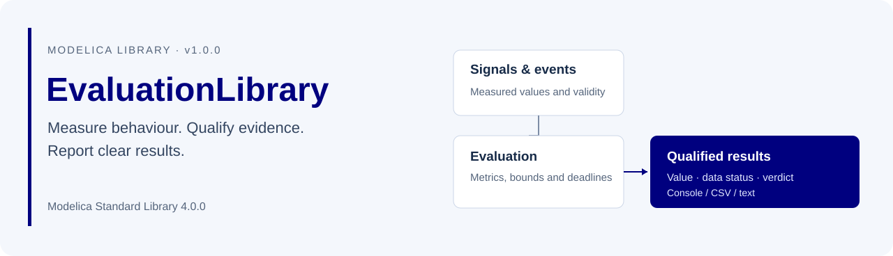
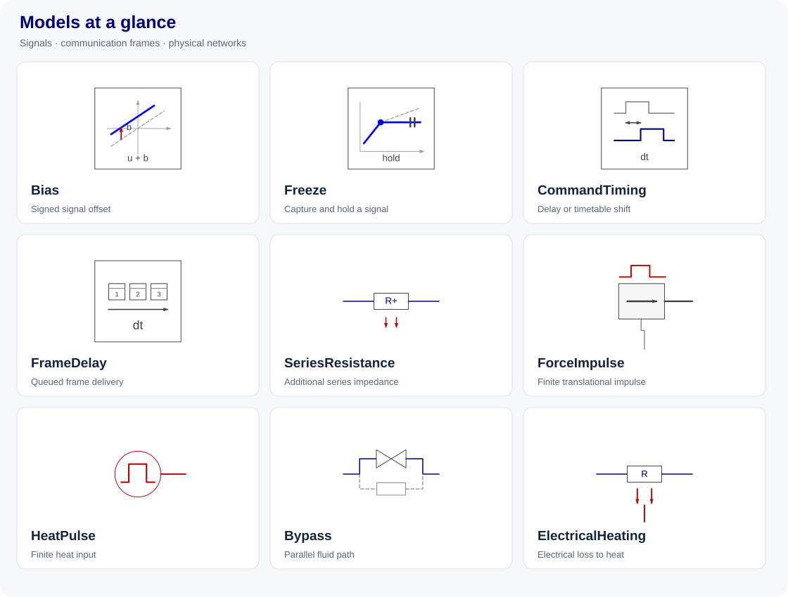

From simulation signals
to qualified results从仿真信号
到可解释的评价结果
Learn to connect the blocks, configure an observation and read what the result actually establishes.
学习如何连接模型、配置观测，并准确理解每项结果能够说明什么。

1. Start with the library1. 从库开始
EvaluationLibrary measures simulation signals and events, checks requirements and reports results with explicit data qualification. It contains 75 public evaluation blocks, supporting result interfaces and functions, and nine self-contained examples. The only library dependency is Modelica Standard Library 4.0.0.
EvaluationLibrary 观测仿真信号与事件，检查要求，并同时报告结果及其数据资格信息。库包含 75 个公开评价模块、配套结果接口和函数，以及 9 个自包含示例。唯一库依赖为 Modelica Standard Library 4.0.0。
This guide follows a practical sequence: run an existing example, assemble a small model, vary its parameters, then interpret the result. The exercises use top-level within; clauses; save each in a separate .mo file, or adjust within when placing it in a named package. The Modelica class names and parameter names are the same in both language views.
本教程按“运行现有示例—组合简单模型—调整参数—解读结果”的顺序展开。练习代码使用顶层 within;，应分别保存为独立 .mo 文件；若放入命名包，应相应调整 within。中英文视图中的 Modelica 类名和参数名保持一致。
Three decisions before connecting a block连线前先明确三件事
- Quantity: which signal or event is being observed, and in which unit?
- Observation: which window, sample grid and validity condition are appropriate?
- Interpretation: is the output a descriptive metric, a requirement decision or a finite-set summary?
- 观测对象：需要读取哪个信号或事件，采用什么单位？
- 观测规则：窗口、采样网格与有效性条件如何定义？
- 结果用途：输出是描述性指标、要求判定，还是有限结果集的汇总？
2. Load and run an example2. 加载并运行示例
- Extract the archive. Keep the
EvaluationLibrarydirectory, itspackage.moand all subdirectories together. - Load Modelica 4.0.0 in your Modelica environment, then open
EvaluationLibrary/package.mo. Avoid loading a second copy of the same package name. - Open
EvaluationLibrary.Examples.MultiSignalAssessment. Inspect its Diagram view, then use its stored experiment: start 0 s, stop 2.2 s, output interval 0.01 s and tolerance 10−7. - Run the model and read the console summary. In the result browser, inspect
assessment.y,assessment.minimum,assessment.maximumandreport.overall.
- 解压压缩包，保持
EvaluationLibrary、根目录package.mo和全部子目录完整。 - 在 Modelica 环境中先加载 Modelica 4.0.0，再打开
EvaluationLibrary/package.mo。避免同时加载两个同名库副本。 - 打开
EvaluationLibrary.Examples.MultiSignalAssessment，查看 Diagram 图，再使用模型自带实验设置：起始 0 s、结束 2.2 s、输出间隔 0.01 s、容差 10−7。 - 运行模型并阅读控制台摘要。在结果浏览器中查看
assessment.y、assessment.minimum、assessment.maximum和report.overall。
| Channel | Input and criterion | Expected interpretation |
|---|---|---|
| angle | Sine amplitude 0.1 rad; absolute value ≤ 0.2 rad | Satisfied |
| position | Ramp to 2 m; absolute value ≤ 1 m | Violated once the ramp exceeds 1 m |
| current | Constant 0.3 A; absolute value ≤ 0.5 A | Satisfied |
| 通道 | 输入与判据 | 预期解释 |
|---|---|---|
| angle | 正弦幅值 0.1 rad；绝对值 ≤ 0.2 rad | 满足 |
| position | 斜坡上升至 2 m；绝对值 ≤ 1 m | 斜坡超过 1 m 后违反 |
| current | 常数 0.3 A；绝对值 ≤ 0.5 A | 满足 |
The observation ends at 2 s and excludes that endpoint. The simulation runs slightly longer so the closed results can be inspected. The table gives analytical expectations from the source definitions; compare them with your simulator output.
观测在 2 s 结束，且不包含该终点。仿真稍晚结束，便于查看收集关闭后的结果。上表是依据源模型定义推导的预期结果，应与实际仿真输出对照。
OpenModelica command-line equivalentOpenModelica 命令行方式
Run these commands from the directory that contains the EvaluationLibrary folder. The packaged Resources/Scripts/export_smoke.mos follows the same working-directory convention.
请在包含 EvaluationLibrary 文件夹的上级目录中运行这些命令。包内 Resources/Scripts/export_smoke.mos 也采用这一工作目录约定。
loadModel(Modelica, {"4.0.0"});
loadFile("EvaluationLibrary/package.mo");
checkModel(EvaluationLibrary.Examples.MultiSignalAssessment);
simulate(EvaluationLibrary.Examples.MultiSignalAssessment,
startTime=0, stopTime=2.2, numberOfIntervals=220,
tolerance=1e-7);
getErrorString();A successful load and model check in your chosen environment are the first compatibility checks. This documentation does not establish a new cross-tool simulation qualification.
在所用环境中成功加载并完成模型检查，是兼容性检查的第一步。本次文档整理不构成新的跨工具仿真验证。
3. Build a signal assessment3. 建立信号评价模型
Create a new model named FirstAssessment. Add a sine source, Statistics.SignalAssessment and Results.ConsoleWriter. In a graphical editor, connect signal.y to assessment.u[1], then connect the complete assessment.y array to report.u. The following complete model provides the same connections.
新建名为 FirstAssessment 的模型，添加正弦源、Statistics.SignalAssessment 和 Results.ConsoleWriter。在图形编辑器中将 signal.y 连接到 assessment.u[1]，再将完整的 assessment.y 数组连接到 report.u。以下完整代码提供相同连接。
within;
model FirstAssessment "Assess a sine signal against an acceptance band"
Modelica.Blocks.Sources.Sine signal(amplitude=0.8, f=1);
EvaluationLibrary.Statistics.SignalAssessment assessment(
n=1,
metricId={"signal"},
unitName={"1"},
lower={-1},
upper={1},
windowStop=2,
samplePeriod=0.01);
EvaluationLibrary.Results.ConsoleWriter report(
n=1, runId="first_assessment");
equation
connect(signal.y, assessment.u[1]);
connect(assessment.y, report.u);
annotation(experiment(StartTime=0, StopTime=2.1,
Interval=0.01, Tolerance=1e-6));
end FirstAssessment;| Setting | Choice in this exercise | Effect |
|---|---|---|
n | 1 | One interpreted signal and one complete result. |
metricId, unitName | {"signal"}, {"1"} | Identify the result and declare its unit. |
lower, upper | −1, +1 | Inclusive acceptance band. |
windowStart, windowStop | 0, 2 s | Observe [0, 2) s. |
samplePeriod | 0.01 s | Sample the reported extrema on a 200-point grid. |
sampled | false (default) | Use continuous event relations for bound checks. |
| 设置 | 本练习取值 | 作用 |
|---|---|---|
n | 1 | 一个输入通道和一份完整结果。 |
metricId、unitName | {"signal"}、{"1"} | 设置结果标识与单位说明。 |
lower、upper | −1、+1 | 包含边界的接受区间。 |
windowStart、windowStop | 0、2 s | 观测 [0, 2) s。 |
samplePeriod | 0.01 s | 在 200 点网格上采样报告极值。 |
sampled | false（默认） | 使用连续事件关系检查边界。 |
Inspect, then vary先查看结果，再修改参数
- Plot
assessment.evaluated[1],assessment.minimum[1]andassessment.maximum[1]. The expected extrema are −0.8 and +0.8. - After collection closes, inspect
assessment.y[1].valueAvailable,dataStatusandverdict. With the stated setup, expect complete evidence and a satisfied requirement. - Change
signal.amplitudeto 1.2 and rerun. The band is violated; inspecteverViolated,firstViolationTimeandviolationDuration[1]. - Set
sampled=trueand compare the result. Only sample ticks determine bound violations in this mode;violationDurationAvailablebecomes false.
- 绘制
assessment.evaluated[1]、assessment.minimum[1]和assessment.maximum[1]，预期极值为 −0.8 与 +0.8。 - 收集结束后查看
assessment.y[1].valueAvailable、dataStatus和verdict。按此配置，预期数据完整且要求满足。 - 将
signal.amplitude改为 1.2 后重新运行。信号将违反区间，查看everViolated、firstViolationTime和violationDuration[1]。 - 将
sampled=true后比较结果，此时仅在采样点检查违反情况，violationDurationAvailable为 false。
Add channels or change the interpretation增加通道或调整输入解释
Set n to the number of channels and supply arrays of the same length for identifiers, units and criteria. Each channel can use SignedValue, AbsoluteValue, Difference or WrappedAngleDifference. Use the wrapped form only for angle differences in radians. It evaluates atan2(sin(u-reference), cos(u-reference)). Unit labels are metadata and do not convert degrees to radians.
将 n 设为通道数，标识、单位与判据数组均采用相同长度。每个通道可以选择有符号值、绝对值、差值或环绕角差，对应 SignedValue、AbsoluteValue、Difference 和 WrappedAngleDifference。环绕形式仅用于弧度角差，计算为 atan2(sin(u-reference), cos(u-reference))。单位标签属于元数据，不会自动把角度换算为弧度。
4. Check a response deadline4. 检查响应期限
The request and response are distinct observations. For a deadline check, connect the request event and the measured action feedback to Response.EventAssessment. The default mode is RequestResponse.
请求与响应是两个独立观测量。期限检查应将请求事件和实际动作反馈分别连接到 Response.EventAssessment。其默认模式为 RequestResponse。
within;
model FirstDeadline "Check the delay between a request and its response"
Modelica.Blocks.Sources.BooleanStep request(startTime=0.2);
Modelica.Blocks.Sources.BooleanStep response(startTime=0.3);
EvaluationLibrary.Response.EventAssessment assessment(
n=1,
metricId={"response_delay"},
deadline={0.2},
windowStop=1);
EvaluationLibrary.Results.ConsoleWriter report(
n=1, runId="first_deadline");
equation
connect(request.y, assessment.request[1]);
connect(response.y, assessment.response[1]);
connect(assessment.y, report.u);
annotation(experiment(StartTime=0, StopTime=1.1,
Interval=0.01, Tolerance=1e-6));
end FirstDeadline;The request occurs at 0.2 s and the response at 0.3 s. The expected matched delay is 0.1 s, within the 0.2 s deadline. Inspect assessment.matched[1], timedOut[1], censored[1] and y[1].verdict. Change the response start to 0.5 s to observe an expired request.
请求在 0.2 s 发生，响应在 0.3 s 发生，预期匹配延迟为 0.1 s，满足 0.2 s 的期限。查看 assessment.matched[1]、timedOut[1]、censored[1] 和 y[1].verdict。将响应起始时刻改为 0.5 s，可观察请求超时。
| Mode | Observed inputs | Interpretation |
|---|---|---|
Occurrence | Rising edges at request; connect all declared inputs. | Event count; a descriptive metric. |
RequestResponse | Separate request and response rising edges. | First-in, first-out matching with one response per request. |
Recovery | Danger at request, recovery-band condition at response. | First danger followed by uninterrupted valid recovery dwell. |
| 模式 | 观测输入 | 结果解释 |
|---|---|---|
Occurrence | request 的上升沿；所有已声明输入都应连接。 | 事件次数，属于描述性指标。 |
RequestResponse | 请求与响应各自的上升沿。 | 先进先出匹配，一个响应最多匹配一个请求。 |
Recovery | request 为危险指示，response 为恢复带条件。 | 首次危险后满足连续有效恢复驻留。 |
- Requests at the same instant are registered before responses, so zero-delay matching is possible. A response exactly at its deadline is accepted inside the observation window.
- The window stop is excluded. An unresolved request whose deadline is at or after the exclusive window stop is censored; increase the observation window when longer follow-up is required.
- An invalid observation gap breaks the event history; queue overflow makes the evidence invalid. Set
capacityfor the expected number of pending requests. - Before recovery is confirmed, loss of validity, return of danger or departure from the recovery band restarts the dwell interval. The first confirmed recovery is latched. With
useRecoverySignal=true, configurerecoveryReference,recoveryToleranceand connectrecoverySignal. The always-declared Boolean inputs still need bindings.
- 同一时刻先登记请求、再处理响应，因此可得到零延迟匹配。在观测窗口内，响应恰好发生在期限边界时仍可接受。
- 窗口终点不纳入观测。未解决请求的截止时刻位于窗口终点或其后时，会成为截尾记录（censored）；需要更长跟踪时，应扩大观测窗口。
- 无效观测间隙会打断事件历史；队列溢出使证据无效。按可能同时等待的请求数设置
capacity。 - 恢复确认前，一旦有效性丢失、危险再次出现或信号离开恢复带，驻留计时重新开始；首次确认的恢复状态会被保持。启用
useRecoverySignal=true后，应配置recoveryReference、recoveryTolerance并连接recoverySignal；始终存在的布尔输入仍需绑定。
ResponseDelay, ResponseTime and ResponseDeadline expose different specialised definitions. In particular, ResponseTime accepts Boolean conditions, and ResponseDeadline does not use the same no-demand outcome as EventAssessment. Read their individual documentation when selecting them.
ResponseDelay、ResponseTime 和 ResponseDeadline 的专用定义不同。例如 ResponseTime 使用布尔条件，ResponseDeadline 的无请求结果也不等同于 EventAssessment。选用时应阅读各自说明。
5. Choose the right class5. 选择合适的模型
| Task | Start with | Connection or configuration |
|---|---|---|
| Related numeric signals | Statistics.SignalAssessment | Real inputs to u; result array y to a writer. |
| Related event tasks | Response.EventAssessment | Request and response arrays; per-task mode and deadline/dwell. |
| Continuous-time mean or RMS | Statistics.TimeMean, TimeRMS | Set the actual window parameters and validity input. |
| Sampled moments | Statistics.SampledMoments | One sample grid for mean, RMS and population variance. |
| Single requirement | Requirements.UpperBound, WithinBand | Configure limits; optionally enable useValidInput and connect valid; inspect verdict and margin separately. |
| Diagnostic labels | Comparison.LabelPerformance | Bind observed and reference labels; connect the eight-result y array. |
| Finite sampled spectrum | Frequency.DiscreteSpectrum | Match nSamples to the window and sample grid. |
| Final report | Results.ConsoleWriter | Connect complete results; set n and optional required. |
| 任务 | 建议入口 | 连接或配置 |
|---|---|---|
| 相关数值通道 | Statistics.SignalAssessment | 实数信号接 u，结果数组 y 接输出模块。 |
| 相关事件任务 | Response.EventAssessment | 连接请求和响应数组，逐任务配置模式、期限或驻留。 |
| 连续时间均值或均方根 | Statistics.TimeMean、TimeRMS | 配置该模型实际暴露的窗口参数和有效性输入。 |
| 采样统计量 | Statistics.SampledMoments | 在同一网格上计算均值、均方根及总体方差。 |
| 单项要求 | Requirements.UpperBound、WithinBand | 配置界限；可按需启用 useValidInput 并连接 valid，分别读取判定与裕度。 |
| 诊断标签 | Comparison.LabelPerformance | 连接观测标签和参考标签，输出为含 8 项结果的 y 数组。 |
| 有限采样频谱 | Frequency.DiscreteSpectrum | 使 nSamples 与窗口和采样网格匹配。 |
| 完整结果报告 | Results.ConsoleWriter | 连接完整结果，设置 n，按需设置 required。 |

The complete class reference below contains every class, including packages, example models, types, functions and internal helpers. Internal helpers support the public blocks and are not the normal entry point for model assembly.
下方完整索引覆盖所有类，包括包、示例模型、类型、函数和内部支撑类。常规建模从公开模块开始，内部支撑类用于服务这些模块。
6. Interpret qualified results6. 解读完整结果
A result separates four questions: is a number available, was the observation complete and valid, has the requirement been decided, and has collection closed? Read the corresponding fields independently.
一份结果分别回答四个问题：数值是否可用、观测是否完整有效、要求是否已有判定，以及收集是否结束。这些问题由不同字段回答，应分别读取。
| Field | Read it as |
|---|---|
valueAvailable | Whether value has a meaningful numerical interpretation. |
dataStatus | Coverage and validity of the observation. |
verdict | Requirement decision; descriptive statistics can remain undecided. |
complete | Collection is closed; this does not imply complete evidence or a satisfied requirement. |
everViolated | A qualified violation witness has been recorded. |
eventCountsAvailable, levelAvailable | Whether the event counters or optional engineering category may be interpreted. |
| 字段 | 应如何解释 |
|---|---|
valueAvailable | value 是否具有有效数值含义。 |
dataStatus | 观测数据的覆盖与有效性。 |
verdict | 要求的判定；描述性统计量可以保持未决。 |
complete | 收集已经关闭，不代表证据完整或要求满足。 |
everViolated | 已记录一次具有有效证据的违反。 |
eventCountsAvailable、levelAvailable | 事件计数或可选工程等级是否可以解读。 |
Status codes in connectors连接器中的状态代码
MetricInput and MetricOutput carry integer enumeration codes. MetricResult uses the enumeration types. The code order is not the aggregation priority.
MetricInput 和 MetricOutput 使用整数枚举代码，MetricResult 使用枚举类型。代码顺序不等于汇总优先级。
| Code | DataStatus | Verdict |
|---|---|---|
| 1 | PENDING | UNDECIDED |
| 2 | COMPLETE | SATISFIED |
| 3 | INCOMPLETE | VIOLATED |
| 4 | INVALID | INVALID |
| 5 | NOT_APPLICABLE | NOT_APPLICABLE |
A result can be COMPLETE / UNDECIDED when it is a statistic with no requirement. An unavailable number is not zero evidence. A closed collection can be incomplete when the requested observation could not be finished.
未绑定要求的统计量可以为 COMPLETE / UNDECIDED。不可用数值不应被当成有效的零值。若未完成要求的观测范围，即使收集已关闭，数据仍可能不完整。
Aggregate only the intended requirements仅汇总需要判定的要求
VerdictAggregator and the writers use required to select entries for the overall decision; individual entries remain visible. Non-applicable entries are excluded. Among included entries, invalid data dominates a violation, which dominates an undecided result. All included entries must be satisfied to obtain SATISFIED; no included entries gives NOT_APPLICABLE.
VerdictAggregator 和输出模块通过 required 选择纳入总体判定的条目，各单项仍保留可见。不适用条目被排除；纳入条目中的优先级依次为无效、违反、未决。所有纳入条目都满足时才得到 SATISFIED，没有纳入条目时为 NOT_APPLICABLE。
If a descriptive statistic is included as required, its undecided verdict can keep the overall result undecided. Set the corresponding required[i] entry to false when it should be reported without contributing a requirement decision.
若把描述性统计量列为必需条目，它的未决判定可能使总体结果保持未决。如果只希望展示该统计量，而不让它参与要求判定，应将对应的 required[i] 设为 false。
7. Write console, CSV and text output7. 输出控制台、CSV 与文本
All writers accept complete results through u[n]. Configure metadata at the producing block, then connect the whole result or result array. A scalar producer uses connect(metric.result, writer.u[1]). Collection is written once when every result has closed, or at normal simulation termination.
所有输出模块均通过 u[n] 接收完整结果。在结果产生端配置元数据，再连接整份结果或数组。标量结果使用 connect(metric.result, writer.u[1])。当全部结果收集关闭，或仿真正常终止时，输出一次。
EvaluationLibrary.Results.CSVWriter csv(
n=1,
runId="trial",
resultSetId="signals",
outputDirectory=".");
// Add to the equation section:
connect(assessment.y, csv.u);This declaration and connection belong inside an existing model, such as FirstAssessment; they are not a complete standalone model. The destination is trial_signals.csv in the simulator working directory.
该声明与连接语句应加入已有模型（如 FirstAssessment），本身不是完整独立模型。文件将输出为仿真工作目录下的 trial_signals.csv。
| Writer | Output | What to inspect |
|---|---|---|
ConsoleWriter | Console summary in declaration order | overall, written |
CSVWriter | Header and rows with runId plus all 30 result fields | filePath, written, skippedExisting |
TextWriter | One formatted line per result | filePath, written, skippedExisting |
| 输出模块 | 输出内容 | 查看字段 |
|---|---|---|
ConsoleWriter | 按声明顺序输出控制台摘要 | overall、written |
CSVWriter | 表头及数据行，含 runId 和全部 30 个结果字段 | filePath、written、skippedExisting |
TextWriter | 每项结果一行格式化文本 | filePath、written、skippedExisting |
- Create the destination directory before simulating. Relative paths are resolved by the simulator working directory.
- The default
WritePolicy.RejectExistingpreserves an existing file and setsskippedExisting. SelectWritePolicy.Overwriteonly when you intend to replace that file. - Use different
runId,resultSetIdorfilePathvalues when retaining multiple runs. - Unavailable values are formatted as
N/Awhere appropriate. Export success is independent of the requirement verdict. A file-system error can stop a simulation through the Modelica Standard Library file functions.
- 仿真前先创建目标目录。相对路径以仿真器工作目录为基准。
- 默认
WritePolicy.RejectExisting保留已有文件，并设置skippedExisting。只有确实需要替换时才选择WritePolicy.Overwrite。 - 保留多次运行时，应使用不同的
runId、resultSetId或filePath。 - 不可用字段会在适当位置显示为
N/A。输出成功与要求判定相互独立；文件系统错误可能经由 Modelica 标准库文件函数终止仿真。
8. Configure windows and sampling8. 配置观测窗口与采样
Use the parameters of the selected class以所选类的实际参数为准
| Interface pattern | Typical parameters | Validity |
|---|---|---|
| Shared assessment blocks | windowStart, windowStop; signal sampling uses sampleStart | Optional valid via useValidInput |
| Window-configurable individual blocks | windowMode, windowStart, windowStop | Optional validity; ExternalSingle exposes a window input |
| Fixed-window specialised blocks | windowStart, windowEnd; sampled classes may expose sampleOffset | A declared valid input must be bound |
| 接口形式 | 常见参数 | 有效性 |
|---|---|---|
| 共享评价模块 | windowStart、windowStop；信号采样使用 sampleStart | 通过 useValidInput 启用可选 valid |
| 可配置窗口的单项模块 | windowMode、windowStart、windowStop | 可选有效性输入；ExternalSingle 暴露窗口输入 |
| 固定窗口专用模块 | windowStart、windowEnd；采样类可能使用 sampleOffset | 已声明的 valid 输入必须绑定 |
The windows are half open. A tick exactly at the start is included; a tick exactly at the stop is excluded. Blocks with ExternalSingle accept the first contiguous external window. A later reopening invalidates that observation. Sample-grid origins and external window boundaries are independent settings.
观测窗口为左闭右开。恰好位于起点的采样点计入，恰好位于终点的采样点排除。采用 ExternalSingle 的模块只接受首个连续外部窗口，再次开启会使该次观测无效。采样网格原点与外部窗口边界是独立配置。
Match frequency buffers to the sample grid使频谱缓冲区与采样网格匹配
For SingleFrequency, DiscreteSpectrum and HarmonicDistortion, explicitly configure the finite sample count. For a zero-based grid, nSamples=200, samplePeriod=0.01 and windowStop=2 give 200 samples in [0, 2) s. Their unchanged default combination with windowStop=5 would provide 500 ticks and exceed a 200-sample buffer. Do not leave that combination unadjusted.
对于 SingleFrequency、DiscreteSpectrum 和 HarmonicDistortion，应明确配置有限采样点数。网格从零开始时，nSamples=200、samplePeriod=0.01 和 windowStop=2 在 [0, 2) s 内恰好得到 200 点。原有默认组合中的 windowStop=5 会产生 500 个采样时刻，超过 200 点缓冲区，因此使用时必须主动调整。
EvaluationLibrary.Frequency.SingleFrequency tone(
frequency=2,
nSamples=100,
samplePeriod=0.01,
sampleStart=0,
windowStart=0,
windowStop=1,
metricId="tone_amplitude",
unitName="V");This is the configuration used by the small frequency example. It estimates a finite-window tone; the result depends on the sample grid, window function and coherence with the tone. The simulator output interval is not the evaluator sample period.
这是小型频域示例所用的配置。它估计有限观测窗口内的单频分量，结果受采样网格、窗函数及频率是否与窗口相干的影响。仿真结果输出间隔不等于评价模块的采样周期。
Read validity rules locally按模型说明理解有效性规则
Different helpers observe validity differently: WindowEvidence latches invalid input during the active window, whereas SampledEvidence checks scheduled ticks. Public blocks can add their own finite-value and denominator checks. Their dataStatus and availability fields are the authoritative qualification for that producer.
不同支撑模型检查有效性的时机不同：WindowEvidence 会在活动窗口内锁存无效输入，SampledEvidence 则在计划采样时刻检查。公开模块还可能增加有限值、分母等检查。应以该结果产生端的 dataStatus 和可用标志作为解读依据。
9. Complete class reference9. 完整类索引
Search by class name, package, English description or Chinese keyword. This reference covers all 147 Modelica files. Select a class name to open its source file; the in-tool documentation provides its exact input and parameter definitions.
可按类名、包名、英文说明或中文关键词检索。本索引覆盖全部 147 个 Modelica 文件。点击类名可打开源文件；工具内文档给出相应的输入和参数定义。
| Class / source类 / 源文件 | Kind类别 | Purpose用途 |
|---|---|---|
EvaluationLibrary.Comparison.ChannelConsistencyComparison/ChannelConsistency.mo | Block模块 | Instantaneous range of valid simultaneous channels评价当前窗口内多个通道的一致性范围。 |
EvaluationLibrary.Comparison.ImprovementComparison/Improvement.mo | Block模块 | Absolute and relative improvement between paired results按改善方向报告绝对与相对改善量。 |
EvaluationLibrary.Comparison.LabelPerformanceComparison/LabelPerformance.mo | Block模块 | Sampled binary classification counts and performance ratios计算 TP、TN、FP、FN 和四项分类性能比率。 |
EvaluationLibrary.Comparison.MultiRunSummaryComparison/MultiRunSummary.mo | Block模块 | Summary of a configured set of comparable result values汇总预先声明可比的有限组运行结果。 |
EvaluationLibrary.Comparison.PairedArrivalSkewComparison/PairedArrivalSkew.mo | Block模块 | Time difference between two first observed arrivals测量成对事件的到达偏差。 |
EvaluationLibrary.Comparison.PairedDifferenceComparison/PairedDifference.mo | Block模块 | Signed difference between comparable completed results计算两个可比完整结果之间的有符号差值。 |
EvaluationLibrary.Comparison.SampleCorrelationComparison/SampleCorrelation.mo | Block模块 | Pearson correlation of paired uniform samples计算成对有效样本的相关性。 |
EvaluationLibrary.ComparisonComparison/package.mo | Package包 | Comparison of signals, event times and result sets对比分析包。 |
EvaluationLibrary.Examples.ContinuousAndSampleStatisticsExamples/ContinuousAndSampleStatistics.mo | Model模型 | Compare continuous and uniformly sampled statistics比较连续与采样统计。 |
EvaluationLibrary.Examples.DiagnosticLabelPerformanceExamples/DiagnosticLabelPerformance.mo | Model模型 | Evaluate Boolean diagnostic decisions against reference labels展示分类计数和比率。 |
EvaluationLibrary.Examples.FrequencyOrFileOutputExamples/FrequencyOrFileOutput.mo | Model模型 | Estimate a sinusoidal amplitude and write its result测量单频分量并输出控制台与 CSV。 |
EvaluationLibrary.Examples.MultiResultSummaryExamples/MultiResultSummary.mo | Model模型 | Combine required verdicts while retaining individual results汇总多个完整结果。 |
EvaluationLibrary.Examples.MultiSignalAssessmentExamples/MultiSignalAssessment.mo | Model模型 | Assess three numerical signals in a shared window统一评价角度、位移和电流。 |
EvaluationLibrary.Examples.RecoveryAndDwellExamples/RecoveryAndDwell.mo | Model模型 | Compare successful and unsuccessful recovery比较成功恢复与未成功满足恢复驻留的情况。 |
EvaluationLibrary.Examples.RepeatedEventMatchingExamples/RepeatedEventMatching.mo | Model模型 | Match repeated request and response edges in FIFO order展示重复请求响应的有限队列匹配。 |
EvaluationLibrary.Examples.RequestResponseDeadlineExamples/RequestResponseDeadline.mo | Model模型 | Compare timely, late, missing and undemanded responses比较及时、同时、缺失及迟到的响应。 |
EvaluationLibrary.Examples.WrappedAngleAndSeverityExamples/WrappedAngleAndSeverity.mo | Model模型 | Evaluate wrapped angular errors and configured severity levels展示弧度环绕误差和工程等级。 |
EvaluationLibrary.ExamplesExamples/package.mo | Package包 | Runnable examples of evaluation and result reporting可运行示例包。 |
EvaluationLibrary.Frequency.DecayRatioFrequency/DecayRatio.mo | Block模块 | Mean decay ratio of sampled positive peaks根据采样峰值计算振荡衰减比。 |
EvaluationLibrary.Frequency.DiscreteSpectrumFrequency/DiscreteSpectrum.mo | Block模块 | Single-sided discrete Fourier amplitude spectrum对固定长度采样序列计算单边离散频谱。 |
EvaluationLibrary.Frequency.HarmonicDistortionFrequency/HarmonicDistortion.mo | Block模块 | Total harmonic distortion over selected harmonics估计有限采样窗口内的谐波失真。 |
EvaluationLibrary.Frequency.SingleFrequencyFrequency/SingleFrequency.mo | Block模块 | Amplitude and phase at a selected frequency估计指定频率的幅值与相位。 |
EvaluationLibrary.Frequency.ToneResponseFrequency/ToneResponse.mo | Block模块 | Finite-record input-output gain and phase difference根据参考与响应采样估计单频增益和相位差。 |
EvaluationLibrary.FrequencyFrequency/package.mo | Package包 | Finite-record frequency and oscillation analysis频域分析包。 |
EvaluationLibrary.Requirements.BooleanRequirementRequirements/BooleanRequirement.mo | Block模块 | Check a Boolean condition throughout an observation window对布尔要求进行窗口内判定。 |
EvaluationLibrary.Requirements.CircularErrorBoundRequirements/CircularErrorBound.mo | Block模块 | Check an inclusive bound on a wrapped angular error对弧度环绕误差进行界限判定。 |
EvaluationLibrary.Requirements.LabelEpisodeDelayRequirements/LabelEpisodeDelay.mo | Block模块 | Measure detection latency within the first labelled episode测量首个真实标签区段内的检测延迟。 |
EvaluationLibrary.Requirements.LowerBoundRequirements/LowerBound.mo | Block模块 | Check an inclusive lower bound检查信号是否满足包含边界的下限。 |
EvaluationLibrary.Requirements.NumericRequirementRequirements/NumericRequirement.mo | Block模块 | Apply numerical acceptance bounds to an existing metric根据所选比较方式判定数值要求。 |
EvaluationLibrary.Requirements.ObjectiveCompletionRequirements/ObjectiveCompletion.mo | Block模块 | Check objective completion with a failure veto检查窗口内目标完成，并应用故障否决。 |
EvaluationLibrary.Requirements.PersistenceLimitRequirements/PersistenceLimit.mo | Block模块 | Limit the duration of each continuous true interval检查条件持续时间是否超过给定上限。 |
EvaluationLibrary.Requirements.ResponseDeadlineRequirements/ResponseDeadline.mo | Block模块 | Check repeated request-response deadlines using FIFO pairing对重复请求与响应执行期限判定。 |
EvaluationLibrary.Requirements.ResponseTimeRequirements/ResponseTime.mo | Block模块 | Check the response latency after the first request记录并检查请求响应延迟。 |
EvaluationLibrary.Requirements.SignedMarginRequirements/SignedMargin.mo | Block模块 | Compute a normalised resource margin and accumulated deficit计算归一化资源裕度和缺额累积量。 |
EvaluationLibrary.Requirements.UpperBoundRequirements/UpperBound.mo | Block模块 | Check an inclusive upper bound检查信号是否满足包含边界的上限。 |
EvaluationLibrary.Requirements.VectorBoundsRequirements/VectorBounds.mo | Block模块 | Check independent numerical bounds for multiple channels同时检查多个信号的上下界。 |
EvaluationLibrary.Requirements.WithinBandRequirements/WithinBand.mo | Block模块 | Check an inclusive interval检查信号是否位于包含边界的接受区间。 |
EvaluationLibrary.RequirementsRequirements/package.mo | Package包 | Numerical, logical and timing requirements要求判定包。 |
EvaluationLibrary.Response.ConditionOccupancyResponse/ConditionOccupancy.mo | Block模块 | Measure condition duration and occupancy fraction统计条件成立的观测时间及占比。 |
EvaluationLibrary.Response.EventAssessmentResponse/EventAssessment.mo | Block模块 | Assess multiple event tasks in a shared observation window在共享窗口内统计事件、匹配请求响应或确认恢复驻留。 |
EvaluationLibrary.Response.EventIntervalsResponse/EventIntervals.mo | Block模块 | Measure intervals between successive event rising edges统计合格事件之间的时间间隔。 |
EvaluationLibrary.Response.FallTimeResponse/FallTime.mo | Block模块 | Measure the 10% to 90% progress time of a falling step测量下降过程中两个阈值间的时间。 |
EvaluationLibrary.Response.FirstOccurrenceResponse/FirstOccurrence.mo | Block模块 | Record the first valid true condition in a window记录窗口内首次有效真条件的时刻，包含左边界。 |
EvaluationLibrary.Response.MovingAverageResponse/MovingAverage.mo | Block模块 | Compute a continuous mean over a trailing window根据连续积分及延迟计算滑动时间均值。 |
EvaluationLibrary.Response.OccurrenceCountResponse/OccurrenceCount.mo | Block模块 | Count valid rising events within an observation window统计观测窗口内合格事件的次数。 |
EvaluationLibrary.Response.OvershootUndershootResponse/OvershootUndershoot.mo | Block模块 | Measure sampled overshoot and undershoot of a transition按声明阶跃幅值计算采样超调率和反向偏离率。 |
EvaluationLibrary.Response.RecoveryTimeResponse/RecoveryTime.mo | Block模块 | Measure recovery delay after a sustained valid return测量首次危险事件之后满足有效驻留的恢复时间。 |
EvaluationLibrary.Response.RepeatedResponseResponse/RepeatedResponse.mo | Block模块 | Measure repeated request-response delays using a bounded FIFO逐个匹配重复请求与响应，并保存有限延迟历史。 |
EvaluationLibrary.Response.ResponseDelayResponse/ResponseDelay.mo | Block模块 | Measure the delay between the first request and response edges测量首次合格请求响应对的延迟。 |
EvaluationLibrary.Response.RiseFallTimeResponse/RiseFallTime.mo | Block模块 | Measure the elapsed time between two directed level crossings测量指定上升或下降过程的阈值穿越时间。 |
EvaluationLibrary.Response.RiseTimeResponse/RiseTime.mo | Block模块 | Measure the 10% to 90% progress time of a rising step测量上升过程中两个阈值间的时间。 |
EvaluationLibrary.Response.SampleHistoryResponse/SampleHistory.mo | Block模块 | Store a bounded sequence of samples and scheduled times保存有界采样历史。 |
EvaluationLibrary.Response.SettlingTimeResponse/SettlingTime.mo | Block模块 | Confirm the final sustained entry into an error band估计信号进入并保持在稳定带内的时间。 |
EvaluationLibrary.Response.SteadyStateErrorResponse/SteadyStateError.mo | Block模块 | Evaluate sampled error bias and residual spread计算指定观测窗口内的采样误差均值与标准差。 |
EvaluationLibrary.Response.TrackingErrorResponse/TrackingError.mo | Block模块 | Compute continuous integral and RMS tracking errors计算跟踪误差及相关累积指标。 |
EvaluationLibrary.Response.ViolationDurationResponse/ViolationDuration.mo | Block模块 | Measure total and longest continuous true durations累计条件违反的有效持续时间。 |
EvaluationLibrary.ResponseResponse/package.mo | Package包 | Event timing, response measurements and duration statistics事件与响应包。 |
EvaluationLibrary.Results.CSVWriterResults/CSVWriter.mo | Block模块 | Write connected result records to a CSV file将连接的完整结果按原顺序导出为 CSV。 |
EvaluationLibrary.Results.ConsoleWriterResults/ConsoleWriter.mo | Block模块 | Print one summary of connected result records在观测结束时输出完整结果和总体判定。 |
EvaluationLibrary.Results.EvidenceMonitorResults/EvidenceMonitor.mo | Block模块 | Observation coverage and data-validity monitor监视观测窗口、有效时长及样本覆盖情况。 |
EvaluationLibrary.Results.GradeByThresholdsResults/GradeByThresholds.mo | Block模块 | Engineering grade from a normalised score按给定阈值将评分映射为等级。 |
EvaluationLibrary.Results.MinimumMarginResults/MinimumMargin.mo | Block模块 | Minimum signed margin across a finite set计算输入裕度中的最小值。 |
EvaluationLibrary.Results.SatisfactionFractionResults/SatisfactionFraction.mo | Block模块 | Fraction of satisfied verdicts in a finite set计算适用条目中满足要求的比例。 |
EvaluationLibrary.Results.TextWriterResults/TextWriter.mo | Block模块 | Write connected result records to a text file将连接的完整结果导出为文本。 |
EvaluationLibrary.Results.VerdictAggregatorResults/VerdictAggregator.mo | Block模块 | Conjunction of required verdicts with retained result records汇总必需且适用条目的判定，并保留子结果。 |
EvaluationLibrary.Results.WeightedScoreResults/WeightedScore.mo | Block模块 | Weighted mean of normalised scores根据明确权重计算综合评分。 |
EvaluationLibrary.Results.WorstCaseResults/WorstCase.mo | Block模块 | Value with the greatest absolute magnitude in a finite set选择绝对值最大的输入并保留原符号。 |
EvaluationLibrary.ResultsResults/package.mo | Package包 | Result aggregation, qualification and reporting结果与报告包。 |
EvaluationLibrary.Signals.AbsoluteErrorSignals/AbsoluteError.mo | Block模块 | Absolute difference between two signals计算相对于参考输入的绝对误差。 |
EvaluationLibrary.Signals.DifferenceSignals/Difference.mo | Block模块 | Signed difference between two signals计算两个输入之差。 |
EvaluationLibrary.Signals.FiniteDifferenceSignals/FiniteDifference.mo | Block模块 | Backward difference of consecutive valid samples在统一采样网格上估计信号变化率。 |
EvaluationLibrary.Signals.RelativeErrorSignals/RelativeError.mo | Block模块 | Signed relative error with a reference magnitude limit以参考值绝对值归一化误差，并检查分母下限。 |
EvaluationLibrary.Signals.ValidityGateSignals/ValidityGate.mo | Block模块 | Signal pass-through with range and age qualification透传输入，并依据外部有效性、值域和数据年龄输出有效标志。 |
EvaluationLibrary.Signals.WrappedAngleErrorSignals/WrappedAngleError.mo | Block模块 | Signed angular error wrapped to one revolution将弧度角差映射至主值区间。 |
EvaluationLibrary.SignalsSignals/package.mo | Package包 | Signal transformations and data validity信号预处理包。 |
EvaluationLibrary.Statistics.ControlEffortStatistics/ControlEffort.mo | Block模块 | Integrated normalised actuator effort and rated-load duration积分归一化控制量的平方，并统计达到额定幅值的时长。 |
EvaluationLibrary.Statistics.EnergyEfficiencyStatistics/EnergyEfficiency.mo | Block模块 | Energy efficiency over an observation interval根据输入、输出功率积分计算能量效率。 |
EvaluationLibrary.Statistics.GatedPeakStatistics/GatedPeak.mo | Block模块 | Sampled peak severity during a hazard condition记录指定条件下的采样峰值。 |
EvaluationLibrary.Statistics.IntegralStatistics/Integral.mo | Block模块 | Signed integral over an observation interval在有效观测窗口内积分输入信号。 |
EvaluationLibrary.Statistics.LinearTrendStatistics/LinearTrend.mo | Block模块 | Least-squares linear trend of uniformly sampled values对有效样本估计线性趋势。 |
EvaluationLibrary.Statistics.SampleExtremaStatistics/SampleExtrema.mo | Block模块 | Sampled extrema, occurrence times and peak-to-peak range记录采样最小值、最大值与极值时刻。 |
EvaluationLibrary.Statistics.SampleMeanStatistics/SampleMean.mo | Block模块 | Arithmetic mean of uniformly sampled values计算有效样本的算术均值。 |
EvaluationLibrary.Statistics.SampleRMSStatistics/SampleRMS.mo | Block模块 | Root mean square of uniformly sampled values计算有效样本的均方根。 |
EvaluationLibrary.Statistics.SampleVarianceStatistics/SampleVariance.mo | Block模块 | Sample variance with a configurable degrees-of-freedom correction计算带可配置自由度修正的采样方差，默认 ddof=1。 |
EvaluationLibrary.Statistics.SampledMomentsStatistics/SampledMoments.mo | Block模块 | One-pass sampled mean, population variance and RMS在同一采样网格上计算均值、均方根与总体方差。 |
EvaluationLibrary.Statistics.SignalAssessmentStatistics/SignalAssessment.mo | Block模块 | Multi-channel bounds assessment with shared sampling在共享窗口内评价多通道信号、边界与可选等级。 |
EvaluationLibrary.Statistics.TimeMeanStatistics/TimeMean.mo | Block模块 | Time-weighted mean of a continuous signal按有效观测时间计算连续时间均值。 |
EvaluationLibrary.Statistics.TimeRMSStatistics/TimeRMS.mo | Block模块 | Time-weighted root mean square of a continuous signal按有效观测时间计算连续时间均方根。 |
EvaluationLibrary.Statistics.TimeVarianceStatistics/TimeVariance.mo | Block模块 | Time-weighted population variance of a continuous signal计算连续时间总体方差。 |
EvaluationLibrary.Statistics.TotalVariationStatistics/TotalVariation.mo | Block模块 | Sum of absolute changes between consecutive samples累计相邻有效样本之差的绝对值。 |
EvaluationLibrary.Statistics.ZeroCrossingOscillationStatistics/ZeroCrossingOscillation.mo | Block模块 | Mean period between observed upward level crossings根据连续观测的向上阈值穿越估计平均周期。 |
EvaluationLibrary.StatisticsStatistics/package.mo | Package包 | Continuous and sampled signal statistics信号统计包。 |
EvaluationLibrary.UsersGuide.ConventionsUsersGuide/Conventions.mo | Class说明类 | Units, observation windows and result interpretation说明窗口、有效性、结果与单位约定。 |
EvaluationLibrary.UsersGuide.GettingStartedUsersGuide/GettingStarted.mo | Class说明类 | Load the library and run a first assessment加载库并连接评价模型的入门步骤。 |
EvaluationLibrary.UsersGuide.LimitationsUsersGuide/Limitations.mo | Class说明类 | Observation and numerical limits说明采样、有限容量与工具相关的使用边界。 |
EvaluationLibrary.UsersGuide.OverviewUsersGuide/Overview.mo | Class说明类 | Library scope and model groups介绍库的用途、组成与阅读入口。 |
EvaluationLibrary.UsersGuideUsersGuide/package.mo | Package包 | User guide使用指南包。 |
EvaluationLibrary.Utilities.Functions.AggregateUtilities/Functions/Aggregate.mo | Function函数 | Combine required verdicts with an explicit priority按优先级合成必需且适用条目的判定。 |
EvaluationLibrary.Utilities.Functions.EvidenceMessageUtilities/Functions/EvidenceMessage.mo | Function函数 | Describe result availability and qualification生成数据与判定资格的简短解释。 |
EvaluationLibrary.Utilities.Functions.FormatRowUtilities/Functions/FormatRow.mo | Function函数 | Format a result as a CSV record or concise text格式化单条完整结果。 |
EvaluationLibrary.Utilities.Functions.FormatSummaryUtilities/Functions/FormatSummary.mo | Function函数 | Format a result set and its overall verdict格式化整组结果与总体判定。 |
EvaluationLibrary.Utilities.Functions.QualifiedCodeUtilities/Functions/QualifiedCode.mo | Function函数 | Qualify a verdict using its data status结合数据状态校核输入判定代码。 |
EvaluationLibrary.Utilities.Functions.QuoteCSVUtilities/Functions/QuoteCSV.mo | Function函数 | Quote and escape a CSV field按 CSV 引号规则转义文本。 |
EvaluationLibrary.Utilities.Functions.SafeIdentifierUtilities/Functions/SafeIdentifier.mo | Function函数 | Check a filename-safe identifier检查字符串是否非空且仅含 ASCII 字母、数字、下划线和连字符。 |
EvaluationLibrary.Utilities.Functions.SampleCountUtilities/Functions/SampleCount.mo | Function函数 | Count uniform samples in a half-open interval计算半开窗口内的计划采样数。 |
EvaluationLibrary.Utilities.Functions.StatusFromCodeUtilities/Functions/StatusFromCode.mo | Function函数 | Convert an integer code to a data status将整数代码转换为数据状态枚举。 |
EvaluationLibrary.Utilities.Functions.StatusTextUtilities/Functions/StatusText.mo | Function函数 | Return the text label of a data status将数据状态转换为文本。 |
EvaluationLibrary.Utilities.Functions.ToVerdictUtilities/Functions/ToVerdict.mo | Function函数 | Derive a verdict from data status and a violation flag根据证据状态及违反记录生成判定。 |
EvaluationLibrary.Utilities.Functions.ToneUtilities/Functions/Tone.mo | Function函数 | Project uniformly spaced samples onto a sinusoid从有限采样序列计算单频分量。 |
EvaluationLibrary.Utilities.Functions.VerdictFromCodeUtilities/Functions/VerdictFromCode.mo | Function函数 | Convert an integer code to a verdict将整数代码转换为判定枚举。 |
EvaluationLibrary.Utilities.Functions.VerdictTextUtilities/Functions/VerdictText.mo | Function函数 | Return the text label of a verdict将判定枚举转换为文本。 |
EvaluationLibrary.Utilities.FunctionsUtilities/Functions/package.mo | Package包 | Functions for result qualification, formatting and spectral analysis公开结果处理与格式化函数。 |
EvaluationLibrary.Utilities.Interfaces.MetricInputUtilities/Interfaces/MetricInput.mo | Connector连接器 | Input connector for a structured evaluation result接收具有固定字段的完整结果。 |
EvaluationLibrary.Utilities.Interfaces.MetricOutputUtilities/Interfaces/MetricOutput.mo | Connector连接器 | Output connector for a structured evaluation result输出具有固定字段的完整结果。 |
EvaluationLibrary.Utilities.InterfacesUtilities/Interfaces/package.mo | Package包 | Directional connectors for structured evaluation results完整结果输入与输出连接器。 |
EvaluationLibrary.Utilities.Internal.AdvanceFIFOUtilities/Internal/AdvanceFIFO.mo | Internal helper内部支撑 | Update a bounded request-response queue更新有限先进先出请求队列。 |
EvaluationLibrary.Utilities.Internal.ContinuousAccumulatorUtilities/Internal/ContinuousAccumulator.mo | Internal helper内部支撑 | Integrate a signal and its squared value while enabled内部连续时间统计累积器。 |
EvaluationLibrary.Utilities.Internal.ContinuousEvidenceUtilities/Internal/ContinuousEvidence.mo | Internal helper内部支撑 | Track a fixed continuous observation window内部固定窗口连续证据管理。 |
EvaluationLibrary.Utilities.Internal.LogCompletionUtilities/Internal/LogCompletion.mo | Internal helper内部支撑 | Print the outcome of a completed output operation输出操作完成后的状态信息。 |
EvaluationLibrary.Utilities.Internal.SampleAccumulatorUtilities/Internal/SampleAccumulator.mo | Internal helper内部支撑 | Accumulate sample moments and extrema内部统一网格采样统计累积器。 |
EvaluationLibrary.Utilities.Internal.SampledEvidenceUtilities/Internal/SampledEvidence.mo | Internal helper内部支撑 | Track validity and coverage on a uniform sample grid内部固定窗口采样证据管理。 |
EvaluationLibrary.Utilities.Internal.SpectrumBufferUtilities/Internal/SpectrumBuffer.mo | Internal helper内部支撑 | Store a bounded sequence of samples内部固定容量频谱采样缓冲区。 |
EvaluationLibrary.Utilities.Internal.ToneSpectrumUtilities/Internal/ToneSpectrum.mo | Internal helper内部支撑 | Calculate a finite one-sided amplitude and phase spectrum内部频谱采样与离散变换计算。 |
EvaluationLibrary.Utilities.Internal.WindowEvidenceUtilities/Internal/WindowEvidence.mo | Internal helper内部支撑 | Track one observation window and its data coverage内部固定或单段外部窗口管理。 |
EvaluationLibrary.Utilities.Internal.WriteRowsUtilities/Internal/WriteRows.mo | Internal helper内部支撑 | Write a result set to a file or the console向文件或控制台写入一组格式化结果，并报告处理状态。 |
EvaluationLibrary.Utilities.Internal.csvQuoteUtilities/Internal/csvQuote.mo | Internal helper内部支撑 | Quote and escape an internal CSV field内部 CSV 文本转义函数。 |
EvaluationLibrary.Utilities.Internal.oneSidedDFTUtilities/Internal/oneSidedDFT.mo | Internal helper内部支撑 | Calculate non-negative discrete Fourier transform bins计算有限序列的单边离散傅里叶变换。 |
EvaluationLibrary.Utilities.InternalUtilities/Internal/package.mo | Internal helper内部支撑 | Internal accumulation, observation and output helpers供库内部使用的支撑实现。 |
EvaluationLibrary.Utilities.Types.AssessmentDirectionUtilities/Types/AssessmentDirection.mo | Type类型 | Direction of inclusive numerical acceptance bounds多通道边界判定方向。 |
EvaluationLibrary.Utilities.Types.DataStatusUtilities/Types/DataStatus.mo | Type类型 | Observation coverage and data-validity status数据覆盖与有效性状态。 |
EvaluationLibrary.Utilities.Types.EventModeUtilities/Types/EventMode.mo | Type类型 | Event-assessment task事件任务类型。 |
EvaluationLibrary.Utilities.Types.EventRoleUtilities/Types/EventRole.mo | Type类型 | Descriptive role of an observed event事件在观测中的说明性角色。 |
EvaluationLibrary.Utilities.Types.EvidenceKindUtilities/Types/EvidenceKind.mo | Type类型 | Basis of an evaluation result连续、采样、事件或派生证据类型。 |
EvaluationLibrary.Utilities.Types.GradeUtilities/Types/Grade.mo | Type类型 | Engineering grade assigned to a qualified score评分等级枚举。 |
EvaluationLibrary.Utilities.Types.InputInterpretationUtilities/Types/InputInterpretation.mo | Type类型 | Interpretation of a real signal before assessment输入的符号、绝对值、差值或环绕角差解释。 |
EvaluationLibrary.Utilities.Types.MetricResultUtilities/Types/MetricResult.mo | Record记录 | Structured metric result with qualification and observation metadata包含数值、资格、判定和元数据的结果记录。 |
EvaluationLibrary.Utilities.Types.NumericComparisonUtilities/Types/NumericComparison.mo | Type类型 | Comparison used to interpret a numerical requirement数值比较方式。 |
EvaluationLibrary.Utilities.Types.ReportFormatUtilities/Types/ReportFormat.mo | Type类型 | Format of a result report报告格式选择。 |
EvaluationLibrary.Utilities.Types.SenseUtilities/Types/Sense.mo | Type类型 | Direction of improved numerical performance数值较大或较小更优的方向。 |
EvaluationLibrary.Utilities.Types.SpectralWindowUtilities/Types/SpectralWindow.mo | Type类型 | Weighting for a finite discrete Fourier transform频谱窗函数类型。 |
EvaluationLibrary.Utilities.Types.TaperUtilities/Types/Taper.mo | Type类型 | Weighting for a finite sinusoidal projection采样频谱加窗方式。 |
EvaluationLibrary.Utilities.Types.VerdictUtilities/Types/Verdict.mo | Type类型 | Requirement outcome independent of observation coverage独立于数据状态的要求判定。 |
EvaluationLibrary.Utilities.Types.WindowModeUtilities/Types/WindowMode.mo | Type类型 | Fixed or single externally gated observation window固定窗口或首个外部连续窗口。 |
EvaluationLibrary.Utilities.Types.WritePolicyUtilities/Types/WritePolicy.mo | Type类型 | Policy for an existing output file目标文件已存在时的写入策略。 |
EvaluationLibrary.Utilities.TypesUtilities/Types/package.mo | Package包 | Result record and enumeration types结果记录与枚举类型。 |
EvaluationLibrary.UtilitiesUtilities/package.mo | Package包 | Result types, connectors and shared evaluation functions支撑类型与函数包。 |
EvaluationLibrarypackage.mo | Package包 | Signal metrics, requirement checks and qualified result reporting用于仿真结果评价与报告的 Modelica 库。 |
No matching classes. Try a shorter keyword or another package.没有匹配项，请尝试较短关键词或其他包。
10. Continue with the examples10. 继续阅读示例
The example models are small entry points. Each includes its sources, evaluation and reporting, so no external input connections are needed. Run the stored experiment and inspect the quantities named in the model documentation.
示例模型是简洁的学习入口，每个示例都包含信号源、评价和结果输出，无需外接输入。使用其自带实验设置，并查看模型说明中列出的结果。
| Example | Focus |
|---|---|
ContinuousAndSampleStatistics | Compare continuous and uniformly sampled statistics |
DiagnosticLabelPerformance | Evaluate Boolean diagnostic decisions against reference labels |
FrequencyOrFileOutput | Estimate a sinusoidal amplitude and write its result |
MultiResultSummary | Combine required verdicts while retaining individual results |
MultiSignalAssessment | Assess three numerical signals in a shared window |
RecoveryAndDwell | Compare successful and unsuccessful recovery |
RepeatedEventMatching | Match repeated request and response edges in FIFO order |
RequestResponseDeadline | Compare timely, late, missing and undemanded responses |
WrappedAngleAndSeverity | Evaluate wrapped angular errors and configured severity levels |
| 示例 | 学习重点 |
|---|---|
ContinuousAndSampleStatistics | 比较连续与采样统计。 |
DiagnosticLabelPerformance | 展示分类计数和比率。 |
FrequencyOrFileOutput | 测量单频分量并输出控制台与 CSV。 |
MultiResultSummary | 汇总多个完整结果。 |
MultiSignalAssessment | 统一评价角度、位移和电流。 |
RecoveryAndDwell | 比较成功恢复与未成功满足恢复驻留的情况。 |
RepeatedEventMatching | 展示重复请求响应的有限队列匹配。 |
RequestResponseDeadline | 比较及时、同时、缺失及迟到的响应。 |
WrappedAngleAndSeverity | 展示弧度环绕误差和工程等级。 |
FrequencyOrFileOutput includes an active CSV writer. It attempts to write frequency_tone.csv in the simulator working directory and preserves an existing file by default.
FrequencyOrFileOutput 已连接 CSV 输出模块，会尝试在仿真工作目录写入 frequency_tone.csv，默认保留已有文件。
11. Troubleshooting and scope11. 常见问题与使用边界
| Symptom | Check |
|---|---|
| A model reports an unbound Boolean input. | Some classes require valid explicitly. Connect a Boolean validity source; use a constant true only when that assumption is appropriate. Bind all always-declared event inputs. |
| A complete statistic has an undecided verdict. | It may have no requirement. Use a requirement block or the assessment criteria when a pass/fail decision is needed. |
| Results stay pending or become incomplete. | Check window parameters, simulation stop time, sample count, unresolved requests and censored follow-up. |
| A spectrum is invalid with default parameters. | Match nSamples and the exact number of ticks inside the half-open window. |
| No new CSV file appears. | Inspect filePath, the simulator working directory, directory existence and skippedExisting. |
| An instantaneous comparison is unavailable after the window. | ChannelConsistency reports the current range and does not retain the maximum range. Select a separate statistic if a final retained measure is required. |
| An improvement result has an unexpected sign. | Improvement.result is the inherited candidate-minus-reference value. Direction-adjusted outputs are absoluteImprovement and relativeImprovement. |
| A summary is complete although some runs were excluded. | MultiRunSummary summarises accepted inputs. Compare nValid with nInputs. |
| 现象 | 检查内容 |
|---|---|
| 模型提示布尔输入未绑定。 | 部分模型需要显式连接 valid。连接有效性信号；仅在确实可假定始终有效时使用常数 true。始终声明的事件输入也必须绑定。 |
| 数据完整，但判定仍未决。 | 可能只是没有要求的描述性统计量。需要满足/违反判定时，使用要求模块或评价模型中的判据。 |
| 结果一直待完成，或结束后不完整。 | 检查窗口参数、仿真结束时刻、采样数、未解决请求及后续观测截尾。 |
| 频谱默认配置给出无效结果。 | 使 nSamples 与半开窗口内的实际采样时刻数量精确匹配。 |
| 没有出现新的 CSV 文件。 | 检查 filePath、仿真工作目录、目录是否存在和 skippedExisting。 |
| 瞬时比较在窗口结束后变得不可用。 | ChannelConsistency 输出当前范围，不保存最大范围；需要最终保留值时，应选用单独的统计模块。 |
| 改善量结果符号不符合预期。 | Improvement.result 仍是继承的候选值减参考值。按改善方向调整的量是 absoluteImprovement 与 relativeImprovement。 |
| 部分运行被排除，但汇总数据为完整。 | MultiRunSummary 对被接受的输入求统计，应对照 nValid 与 nInputs。 |
- Finite samples do not prove strict continuous extrema. Finite candidate sets do not establish a continuous-domain global optimum or an occurrence probability.
- The optional levels 0, 1 and 2 in
SignalAssessmentuse sampled absolute interpreted peaks and configured thresholds. They are engineering categories.GradeByThresholdsexposes its separate A/B/C/D grade throughgrade. SampleHistorycompacts accepted values after invalid ticks whilestampsdescribes the planned grid. Do not pair those arrays as valid observations when the history is invalid.- Numerical behaviour depends on the chosen solver, event handling, sample grid and input model. Recheck example outputs when moving to a different Modelica environment.
- 有限采样不能证明严格连续极值；有限候选集合不能证明连续域全局最优或事件发生概率。
SignalAssessment的可选 0、1、2 级基于采样得到的绝对解释值峰值及配置阈值，属于工程类别。GradeByThresholds则通过独立的grade输出 A/B/C/D 等级。SampleHistory在无效采样后紧凑存放被接受的数值，而stamps描述计划网格。历史无效时，不应把两数组逐项配对为有效观测。- 数值行为受求解器、事件处理、采样网格及输入模型影响。更换 Modelica 环境时，应重新核对示例结果。
12. Documentation and further reading12. 文档与延伸阅读
Use the README for library selection and installation, the in-tool UsersGuide for a short introduction, and each class’s Documentation for its precise behaviour. The tutorial structure follows the established example-first, incremental approach used in public Modelica library guides. The references below are reading resources.
README 用于了解库内容与安装方式，工具内 UsersGuide 提供简明入门，各类的 Documentation 说明精确行为。本教程参考公开 Modelica 库使用指南常见的“先运行示例、再逐步搭建”写法。下列链接为延伸阅读资料。